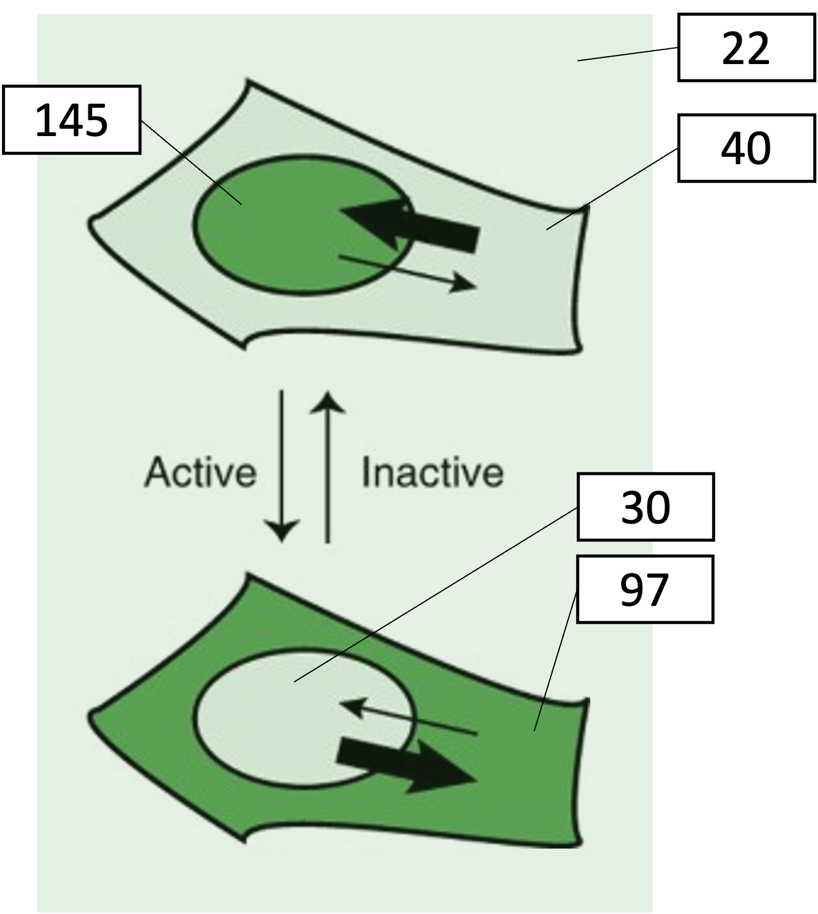
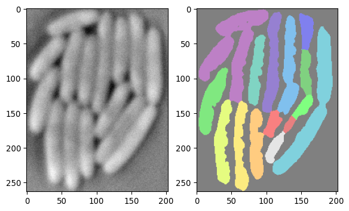

To automate a pipeline, the following components are useful:
Loops
Functions
Try to code in a modular fashion!
Interaction with the filesystem using:
os, glob.glob
These topics were covered in our previous “Introduction to Python” course.
Writing reusable, parameterized pipelines
Additionally, it’s good practice to write scripts that can process any dataset, rather than scripts tailored hard-coded for a specific one. This allows you to maintain a clear record of how each dataset was analyzed (e.g. by having a text document with previous execution commands).
To read input arguments, use - sys.argv, or - argparse (documentation)
If you need to tune parameters for analyzing data, it might be good practice to create a config file.
You can e.g. - read a table using csv (built-in python library) - read an excel file using pandas.read_excel() - use yaml (or json) to read config files
It might be convenient to store the segmentation masks somewhere, use np.savez_compressed or similar.
Plot the observed bacterial areas over time.
Likely your segmentation won’t be perfect. In the manuscript, the algorithm was tweaked and segmentation manually corrected and curated. This is an exercise. Don’t try to do a perfect job. Use a segmentation function based on chapter 3, and have that loop over the images.
Nuclear data
Design a pipeline such that:
For each frame, the nuclei get segmented.
It might be convenient to store the segmentation masks somewhere, use np.savez_compressed or similar.
First, for a single image try to do the following:
Combine data from the segmentation masks and the other fluorescent channels.
In the 2nd (ie channel 1) fluorescent channel, the KTR signal is recorded.
You can open the data in FIJI to check.
Using your nuclear mask based on the channel 0, calculate the mean signal for each respective nuclei.
Can you now extract the nuclear KTR signals from nuclei for multiple images? And plot this over time?
Next, use morphology operations to create a mask that corresponds to a small ring of pixels around the nuclei (ie overlapping with cytoplasm, but excluding the nucleus itself).
Now extract the signal from those regions as well.
Plot this signal too.
Now for each time t, determine the average nuclear and cytoplasmic signal.
Plot the nuclear:cytoplasmic ratio over time.
Can you guess what was done in this experiment?
Background correction
An important consideration when quantifying intensity data, is correcting for the background level.
For example, consider the following example, where intensity values corresponding to measurements on fluorescent signal are shown:

The following table calculates the ratio between the nuclear and cytoplasmic signal, both based on the raw signal, and on the background subtracted signal. This is done both for the inactive and active kinase.
Inactive kinase
Active kinase
Raw signal
Background subtracted
Raw signal
Background subtracted
Nuclear signal
145
123
30
8
Cytoplasmic signal
40
18
97
75
Ratio
3.6
6.8
0.3
0.1
Fold-change
12
68
You can see that subtracting the background leads to rather different picture. When you look at the fold-change in ratio, there’s even more than a factor 5 difference with or without background correction!
Ways to estimate the background
A common way to correct for the background level is to subtract a single value that represents the average intensity that you attribute to background signal.
Subtracting the mode. In many cases, the mode (most frequently observed value) offers a good estimate for that level. This is applicable when most pixels in your picture are background pixels, and they appear as a large peak in the histogram.
Subtracting mean from known background location. When you know certain parts of your image will never produce any signal (e.g. because there are no cells in a cell culture picture), you can estimate the background by averaging across that region.
There exist multiple more complex algorithms to perform background correction.
For example, the Rolling ball algorithm. When you have foreground features of a certain typical size in your image and you have a varying background, you can apply the rolling ball algorithm. In Python, you can for example use skimage.restoration.rolling_ball. This schematic explains the idea nicely (the algorithm was described first by Sternberg in 1983).
Flat-field correction
Another type of artifact can occur in quantitative intensity measurements on a microscope when the sample is illuminated unevenly. This can be corrected for by taking a reference image based on a uniform sample, for example a glass slide evenly covered by a dye. (Or better yet, the per-pixel mean over many pictures of that slide.)
Exercise
Can you apply a background correction to the nuclear data, and re-calculate the ratios?
Napari
We’ve seen that sometimes computer annotations require human correction.
A very convenient tool in image analysis is Napari. This allows a user to interactively view and edit images and segmentation masks. It also allows you to write custom functions that can be executed on click, or with widgets.
Let’s load some example data:
import tifffile as tiffimport numpy as npimport matplotlib.pyplot as pltarray_npz = np.load('images/biological/ecoli_segmentation_result_250.npz')img_ecoli = array_npz["img_crop"]img_ecoli_mask = array_npz["segmask"]fig, axs = plt.subplots(1, 2)axs[0].imshow(img_ecoli, cmap='grey')axs[1].imshow(img_ecoli_mask, cmap ='nipy_spectral', alpha=0.5)plt.show()

Now, it would be nice to be able to correct the mask in the picture above. Napari offers a way to do this:
# now show this data in napariimport naparifrom skimage.measure import labelfrom magicgui import magicgui# -------------------------------# basic napari initialization# initialize a napari instanceviewer = napari.Viewer()# add the imageviewer.add_image(img_ecoli, name='bacteria')# add the mask as a "label" layer (has specific functionalities)viewer.add_labels(img_ecoli_mask, name='segmentation')# -------------------------------# Adding a functionality# define a small function that re-labels the mask,# and add it as a button in the napari side panel@magicgui(call_button="Re-label segmentation")def relabel_mask():# get the current mask from the napari layer current_mask = viewer.layers['segmentation'].data# re-label it using skimage.measure.label new_mask = label(current_mask)# update the napari layer with the new mask viewer.layers['segmentation'].data = new_mask# add the button+function as a "widget" to napariviewer.window.add_dock_widget(relabel_mask, area='right')# -------------------------------# run naparinapari.run()# -------------------------------# Accessing data after closing napari window# after closing napari, access the (possibly re-labeled) maskcorrected_mask = viewer.layers['segmentation'].data# -------------------------------# Further code# which can e.g. be saved or displayed_ = plt.imshow(corrected_mask, cmap ='nipy_spectral')
In the above example we have added a small functionality, that introduces a button on top of the default napari window. (The section Adding a functionality can be left out and the code will still work.)
Technical note: the @ sign in the @magicgui(call_button="Re-label segmentation") syntax, is called a “decorator”. It allows you to add extra functionality to a function in a convenient way. In this case, it adds the functionality of creating a button in the napari side panel that calls the function when clicked. This python syntax is not covered here, see e.g. here for more information.
Napari is highly customizable, and you can add many custom functions to it. Developers of image analysis packages often use Napari to make it easy for users to interact with pictures and their functionalities.
It’s beyond the scope of this workshop to show all Napari features, but I wanted to make you aware a tool like this exists.
Exercise
Play around with the above code to try out napari.